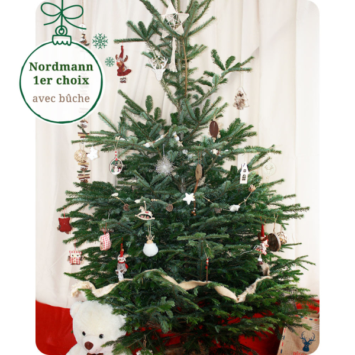
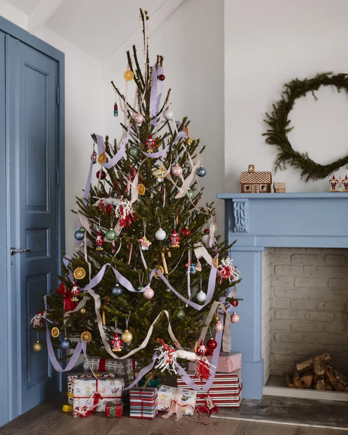

Mon sapin royal
Royalement féerique, ce sapin digne d'un palais royal, offrira toute sa
grandeur à votre salon. Reflet de la beauté de noël, cette variété de conifère
vous offrira des fêtes de fin d'année digne de ce nom. Le Nordmann a la
particularité d'être extrêmement résistant. Ses aiguilles restent en place
pendant longtemps et ne piquent pas. Sapin préféré des français, il est en
passe de détrôner le traditionnel épicéa.

Sapin de Noël Epicea
Le port de ce sapin naturel en pot est touffu et équilibré, les branches orientées vers le haut.
Ses aiguilles sont plus fines et nombreuses que celles du Nordamnn.
Il dégage une agréable odeur de résine qui va envahir la pièce et vous faire entrer dans l'esprit de Noël.
Vos décors de Noël seront bien mis en valeur, contrastant sur son feuillage vert foncé à reflets bleutés.
Que ce soit pour un arbre de Noël original ou de tradition, vous ne serez pas déçu.
Ce sapin de Noël en pot peut être placé aussi bien en décoration intérieur qu'en sapin de Noël pour extérieur.
Pour un sapin de Noël de qualité supérieure, optez pour un Epicéa Label Rouge
de 1m50. Si vous souhaitez des fêtes aux coloris modernes, le sapin floqué blanc est fait pour vous.
